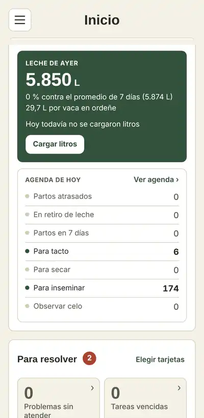
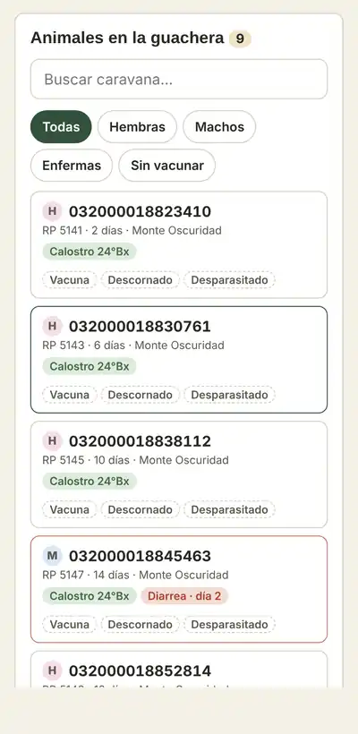
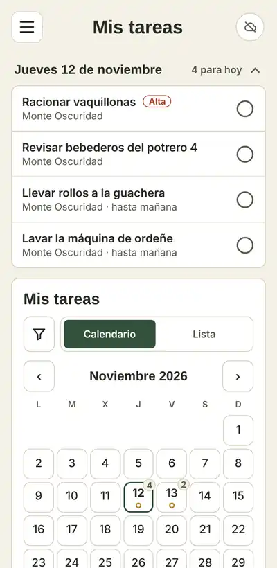
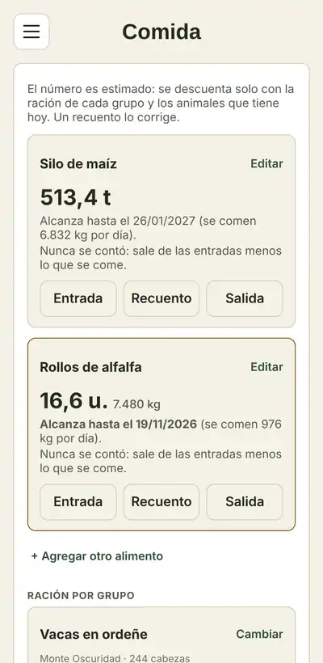

4:30 Ordeñe
Se cargan los litros
El tambero los anota desde el celular, en el corral. Si dieron menos que la semana pasada, la app avisa.
La app que hicimos para ordenar nuestro propio tambo: cada uno carga lo suyo desde el celular —litros, partos, calostro, tareas— y vos lo ves todo, sin estar ahí.
Te contesta una persona. Te la mostramos en 20 minutos, por videollamada o en tu tambo.


La empezamos para ordenar el tambo de nuestra familia: las tareas, la guachera, los litros y la comida, todo en un mismo lugar.
Un tambo familiar del interior
Por eso cada pantalla está pensada para quien la usa con las botas puestas: letra grande, pocos botones y que ande aunque no haya señal. No es un programa de oficina adaptado al campo; es al revés.
La mayoría de las apps se traban sin internet. Esta no: lo que se carga queda guardado en el celular y se manda solo cuando vuelve la señal.

Sin señal: lo que cargues queda guardado
Pantallas reales de la app, con datos de ejemplo.
4:30 Ordeñe
El tambero los anota desde el celular, en el corral. Si dieron menos que la semana pasada, la app avisa.
7:00 Guachera
Pasa el bastón por la caravana y carga lo de esa ternera. Las enfermas quedan marcadas.
10:00 Campo
Racionar, revisar bebederos, llevar rollos. La marca hecha aunque no haya señal.
19:00 En casa
Litros, partos, tareas hechas y hasta cuándo alcanza el silo. Sin llamar a nadie.

Mensajes de WhatsApp que se pierden, el cuaderno del galpón y la planilla que nadie actualiza.
Antes
Las tareas se dicen de palabra y nadie sabe si se hicieron.
Ahora cada tarea tiene responsable y fecha, y se marca hecha desde el celular.
Antes
Litros, partos y tactos en papel, imposibles de buscar cuando hacen falta.
Ahora se carga en el momento y queda ordenado por vaca y por fecha.
Antes
Para saber cómo viene el tambo tenés que ir, llamar o esperar a fin de mes.
Ahora lo ves al día, desde tu casa: litros, partos, tareas y comida.
Pensada para el tambo y el campo, no para una oficina. Lo que no usás todos los días, no molesta.
Cada tarea con su responsable, su fecha y su aviso al celular.
La agenda del día: qué vaca inseminar, tactar, secar o qué parto viene.
Cada ternera desde que nace: calostro, alimentación, vacunas y enfermedades.
Los litros de cada día y el control lechero por vaca, sin cuaderno.
Cuánto silo, rollos y gasoil queda, y hasta cuándo alcanza.
Lotes sobre el mapa, siembras, aplicaciones, lluvias y rindes.
Se importan aunque no tengan las columnas de la plantilla: la app pregunta qué columna es cada dato.
Si ya lo usás, traemos los datos de tus vacas. La app no lo reemplaza: lo lleva al celular de tu gente.
Subís el PDF y la app toma los litros entregados y la calidad (grasa, proteína, células).
Leés la caravana electrónica y la app abre ese animal. Sin escribir números largos.
El empleado no se pierde en pantallas que no usa, y lo sensible —sueldos, números del tambo— queda para quien corresponde.
Quien decide
Ve todo, desde donde esté: tambos, gente, números y campo.
Quien organiza
Reparte y controla el trabajo, la comida y el gasoil.
Quien está en el tambo
Carga litros, partos, tactos, la guachera y su agenda del día.
Quien hace la tarea
Ve sus tareas, las marca hechas y avisa si se rompió algo.
La dejamos andando con tus datos y con tu gente.
Por WhatsApp o en tu tambo. Nos contás cómo trabajan, quién hace qué y qué querés controlar.
Cargamos tus tambos, tus animales, tu gente y las tareas de siempre. No arrancás con una app vacía.
Le explicamos a cada uno lo suyo, en el tambo, y te acompañamos las primeras semanas.
Se paga por tambo, con toda tu gente adentro. Depende de cuántos tambos y campos tengas: escribinos y te lo pasamos en el día.
Qué incluye
Cada uno ve solo lo suyo: el empleado sus tareas, el tambero lo que carga. Botones grandes, pocas opciones y letra que se puede agrandar. Se la explicamos a cada uno en el tambo.
Se carga igual. Queda guardado en el celular y se manda solo cuando vuelve la señal, en el orden en que se cargó. Si dos personas cambian el mismo dato, la app no lo pisa: avisa.
No. Anda en los celulares que ya tienen (Android o iPhone), en una tablet o en la compu. Se instala desde el navegador, sin pasar por ninguna tienda.
Tuyos. Se guardan con copia de seguridad y, si un día dejás de usarla, te los llevás en Excel.
Sí. Manejás varios tambos y campos desde la misma cuenta y los ves por separado o juntos.
No, a propósito. Registra cantidades —litros, kilos, insumos, lluvias— para que vos los lleves a tus números. Es para ordenar el trabajo, no para hacer la contabilidad.
No. Lo complementa: es la herramienta del que está en el tambo. Si ya tenés datos cargados en otro lado, los traemos para que arranques con todo.
Contanos cuántas vacas tenés y cómo trabajan hoy. En 20 minutos te mostramos cómo quedaría, sin compromiso.
WhatsApp +54 9 3562 52-6469 · Te contesta una persona, sin compromiso. Si no te sirve, no te vamos a insistir.